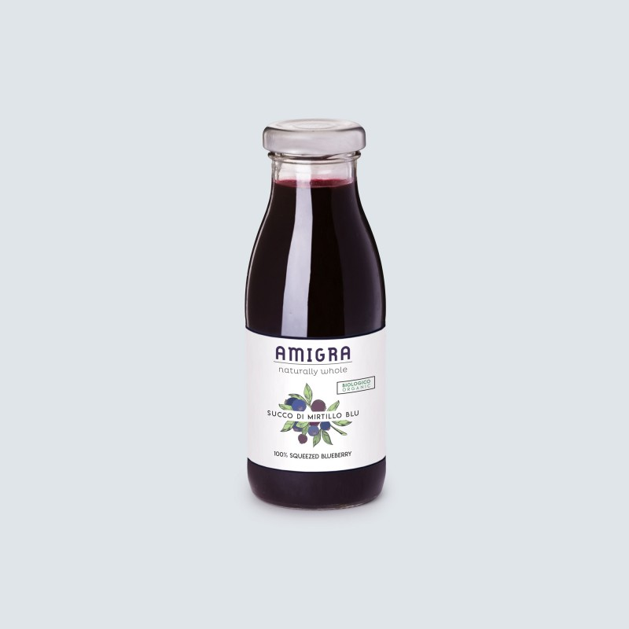

7 increíbles beneficios del jugo de granada — Mejor con Salud
- 7 increíbles beneficios del jugo de granada — Mejor con Salud
Beneficios del zumo de granada. Es un zumo sumamente rico en antioxidantes, por lo que la granada puede convertirse en uno de esos alimentos que no podrían faltar dentro de una nutrición beneficiosa contra los radicales libres. Además, es una bebida natural saludable desde un punto de vista nutricional, gracias a que es rico tanto en ... - Beneficios del jugo de granada - En pareja
Leer también: Te contamos los beneficios que no conocías del jugo de papaya. Estas son las razones por las que debes beber jugo de granada en ayunas. Evita el daño celular y la formación de ... - Zumo de granada: beneficios y propiedades
Los beneficios del jugo de granada se pueden disfrutar cuando el jugo se consume con moderación. Tiene una gran cantidad de azúcar natural (aproximadamente 32 gramos), que cuando se toma en grandes cantidades puede generar aumento de peso, azúcar en la sangre y problemas dentales. - Quince beneficios para la salud del jugo de granada ...
De acuerdo a la ciencia, el jugo de granada es mucho mejor que el vino, esto se debe a que contiene el triple de antioxidantes, vitaminas y minerales que hacen de un organismo muy saludable. Otro de los beneficios del jugo de granada es que retarda los efectos del envejecimiento, asi que no dudes en consumirla y sentirte saludable. - 13 Beneficios comprobados para la salud de la granada
La granada es uno de los frutos más exóticos y delirantes que podemos comer. Su sabor y color es único, haciéndola uno de los ingredientes más usados en la cocina mexicana. Su origen es asiático y los antiguos egipcios la usaban mucho para la creación de una bebida muy parecida al vino.. En cuanto a la fruta, esta posee vitaminas y minerales como el calcio, hierro y potasio. - Los beneficios del jugo de granada - Blog de farmacia
Con semejante presentación seguro que ya tienes ganas de comer una rica y dulce granada. Pero también puedes aprovechar las propiedades de su jugo. Esta fruta es muy nutritiva ya que nos aporta minerales (calcio, hierro y potasio), vitaminas (A, C y E, además de B5) y contiene mucha fibra. Entre los beneficios del jugo de granada destacamos: 1. - 7 beneficios del jugo de granada - Sú Médico
El jugo de granada puede ayudar a mejorar el rendimiento sexual y la fertilidad. La investigación realizada por C. P. Forest, publicada en "International Journal of Impotence Research" en 2007, reveló que el jugo de granada mejora las erecciones en los hombres con disfunción eréctil. - 10 beneficios del jugo de granada - Estilo de vida Sano
Ayuda a reducir la posibilidad de tener partos prematuros y evitar el bajo peso de los recién nacidos. 21/08/2018; 13:04 hrs. Los beneficios del jugo de granada para la salud no son nuevos y es que muy a parte de ser saludable es muy delicioso, pero sus propiedades antioxidantes, antivirales y antitumorales, las vuelve una fuente de vitaminas única. ... - Jugo de Granada para el colesterol, perder peso, contra el ...
Además, su jugo también se puede aplicar sobre la piel para obtener estos beneficios. ¿Cómo consumir el jugo de granada? Se dice que muchos de los antioxidantes de la granada se encuentran en su cáscara, por lo que se recomienda, partirla y exprimirla al igual que una naranja, para obtener su jugo, de esta forma, al oprimir la cáscara, se liberan estos antioxidantes. - 10 Beneficios del Zumo de Granada para Nuestro Organismo
Los beneficios del jugo de granada Beber zumo de granada se ha popularizado en los últimos años. En medio de todo el alboroto que rodea este jugo, un buen número de sus posibles beneficios han salido a la luz. Los estudios han demostrado que el zumo de granada ser beneficioso en la pr
Menu Salud Todo Salud Primeros auxilios Enfermedades Medicamentos Tratamientos médicos Cuerpo humano Anatomía y fisiología Remedios naturales Todo Remedios naturales Terapias naturales Plantas medicinales Naturopatía Cuidados del cuerpo Tratamientos faciales Cuidados para el cabello Otros tratamientos naturales Bienestar Todo Bienestar Belleza y cuidado personal Mente sana Ejercicio físico y deporte Buenos hábitos Dieta Todo Dieta Dietas saludables Dieta mediterránea Perder peso Dietas detox Nutrición Alimentos orgánicos y transgénicos Recetas Todo Recetas Recetas saludables Platos saludables Postres Recetas vegetarianas y veganas Recetas sin gluten Zumos y batidos Infusiones Maternidad Todo Maternidad Embarazo Bebés Niños Adolescentes Planes en familia Pareja Todo Pareja Sexo y pareja Salud y sexualidad Planes en pareja Relaciones de pareja Conflictos de pareja Ruptura y divorcio Fitness Lifestyle Todo Lifestyle Curiosidades Moda y estilo Decoración Consejos para el hogar Jardines y exterior Reciclaje Política de privacidad • Términos y condiciones de uso • Política de cookies Salud Primeros auxilios Enfermedades Medicamentos Tratamientos médicos Cuerpo humano Anatomía y fisiología Remedios naturales Terapias naturales Plantas medicinales Naturopatía Cuidados del cuerpo Tratamientos faciales Cuidados para el cabello Otros tratamientos naturales Bienestar Belleza y cuidado personal Mente sana Ejercicio físico y deporte Buenos hábitos Dieta Dietas saludables Dieta mediterránea Perder peso Dietas detox Nutrición Alimentos orgánicos y transgénicos Recetas Recetas saludables Platos saludables Postres Recetas vegetarianas y veganas Recetas sin gluten Zumos y batidos Infusiones Maternidad Embarazo Bebés Niños Adolescentes Planes en familia Pareja Sexo y pareja Salud y sexualidad Planes en pareja Relaciones de pareja Conflictos de pareja Ruptura y divorcio Fitness Lifestyle Curiosidades Moda y estilo Decoración Consejos para el hogar Jardines y exterior Reciclaje Portada » Remedios naturales » Terapias naturales
7 increíbles beneficios del jugo de granada
24 Julio, 2020 Este artículo ha sido escrito y verificado por la pedagoga en educación física y nutricionista Elisa Morales Lupayante El consumo frecuente de jugo de granada puede ayudarnos a prevenir múltiples dolencias y favorecer una mejor circulación sanguínea. ¿En qué consiste la maderoterapia? Apiterapia o terapia con abejas: ¿qué es y para qué se usa? ¿Qué son las tinturas herbales y para qué se utilizan?Beber jugos naturales es bueno para nuestra salud . Seguro que habrás leído o escuchado esta afirmación a menudo. Entre ellos uno muy beneficioso es el jugo de granada.
Aunque todas las frutas son nutritivas, cada una tiene sus propiedades. Aquí te contaremos los beneficios del jugo de granada.
¡Querrás disfrutarlo a partir de ahora!
La granada
El árbol que nos proporciona esa riquísima fruta es el granado. Florece entre abril y junio y puede sobrevivir hasta a 1100 metros de altura.
Es originaria de Asia pero en la actualidad también se planta en las cercanías al mar Mediterráneo, Sudamérica, Australia y Sudáfrica.
Se han encontrado vestigios del uso de la granada por parte de los pueblos de áreas desérticas ya que se conservaba durante bastante tiempo.
Por ejemplo, en Grecia se dice que el primer árbol fue plantado por Afrodita. En Java se emplea la fruta en los rituales de embarazo y en China se ofrece a los recién casados para garantizar una gran descendencia.
Ver también: El embarazo, esa unión mágica con un ser que amamos pero aún no conocemos
Beneficios del jugo de granada
Con semejante presentación seguro que ya tienes ganas de comer una rica y dulce granada. Pero también puedes aprovechar las propiedades de su jugo.
Esta fruta es muy nutritiva ya que nos aporta minerales (calcio, hierro y potasio), vitaminas (A, C y E, además de B5) y contiene mucha fibra .
Entre los beneficios del jugo de granada destacamos:
1. Tratamiento para aliviar síntomas de la quimioterapia
Aunque no es una cura para esta enfermedad, puede ayudarnos a mejorar los síntomas. Por eso es un complemento ideal para los tratamientos convencionales .
De acuerdo con una investigación realizada por la Universidad de Ciencias Médicas Tabriz (Irán), el consumo de jugo de granada ayuda a inhibir el crecimiento de las células cancerígenas que causan el cáncer de próstata y, a su vez, disminuirían el riesgo de muerte por esta enfermedad.
Si bien los estudios en humanos son limitados e insuficientes, por ahora la evidencia es alentadora para el desarrollo de futuros tratamientos.
2. Es depurativo
Es muy bueno para el hígado , ya que lo fortalece y ayuda a eliminar las toxinas. Esto es debido a su gran contenido de ácido cítrico, potasio y agua que además favorecen la eliminación de líquidos y un buen funcionamiento renal. Así lo afirma este estudio realizado por la Sociedad Americana de Nefrología, que sugiere que la granada ayudaría a los pacientes con diálisis.
Es aconsejable en personas con hiperuricemia o piedras en los riñones.
3. Antiestrés
Beber el jugo de granada por las mañanas aumenta las emociones positivas, la vitalidad y el enfoque. También reduce la ansiedad, el estrés y se usa en casos de insomnio o fatiga crónica.
4. Cardioprotector
Beber varias veces a la semana el jugo de la granada reduce los niveles de colesterol en sangre y previene la aparición de algunas enfermedades.
También disminuye el riesgo de padecer arteriosclerosis. Esta fruta ayuda contra la formación de placas de ateroma en las paredes de las arterias.
Tras dos semanas bebiendo jugo de granada a diario los voluntarios de una investigación de la Universidad de Nápoles (Italia) mostraban una presión sistólica reducida en un 5%.
Por el elevado aporte de potasio es perfecto para aquellos con hipertensión arterial. Además, cuenta con óxido nítrico que relaja los músculos, permite la vasodilatación y regula el flujo sanguíneo.
5. Neuroprotector
En un estudio de la Universidad de Washington (Estados Unidos) se ha llegado a la conclusión de que el jugo de granada consumido en las embarazadas protege al feto de posibles lesiones al momento del parto.
Sobre todo en bebés prematuros, ya que cuando el parto se adelanta puede no haber suficiente flujo de sangre en el cerebro del niño y el oxígeno disminuye.
Al parecer el jugo de granada puede reducir los daños cerebrales e incluso ayudar con disfunciones neurológicas como la enfermedad de Alzheimer.
6. Ayuda a bajar de peso
Tanto la fruta como el jugo de granada son aliados para bajar de peso. Se trata de un complemento perfecto para aquellos que hacen dieta, porque elimina las toxinas acumuladas, es diurético (tal y como afirma este estudio realizado por la Universidad de Teherán) , saciante y muy energizante.
Te recomendamos leer: La obesidad multiplica por 7 la probabilidad de padecer artrosis
7. Ayuda al sistema inmune
Gracias a la gran cantidad de antioxidantes que nos aporta la granada refuerza el sistema inmunitario y nos ayuda a hacerle frente a gripes, resfriados e infecciones.
Más beneficios
¡Por supuesto que la granada (y su jugo) tienen más propiedades! Algunas de ellas son:
Prevenir la aparición de arrugas tempranas. Así lo afirma esta investigación realizada por la Universidad de Winsconsin (Estados Unidos). Reduce los síntomas de la menopausia, según confirma este estudio realizado por la Universidad Daaegu Haani (Corea). Ayuda a absorber el hierro y reducir la anemia. Tiene propiedades antiinflamatorias, según asegura este estudio de la Universidad de Tuscia (Italia). Favorece la disminución de los síntomas de hemorroides y diarrea, tal y como afirma este estudio realizado por la Universidad Islámica Azad (Irán).Como podemos ver esta excelente fruta puede ayudarnos a mantenernos saludables. Además de ser un gran complemento para nuestra dieta ¡No dudes en comenzar a disfrutar del jugo de granada!
Remedio de granada y aloe vera para limpiar las arterias La mezcla de granada con aloe vera nos brinda un interesante remedio para limpiar las arterias y reducir el colesterol. ¡No dejes de probarlo en casa! Leer más » Bibliografía Gil, M. I., Tomas-Barberan, F. A., Hess-Pierce, B., Holcroft, D. M., & Kader, A. A. (2000). Antioxidant activity of pomegranate juice and its relationship with phenolic composition and processing. Journal of Agricultural and Food Chemistry , 48 (10), 4581–4589. https://doi.org/10.1021/jf000404a Jurenka, J. (2008, June). Therapeutic applications of pomegranate (Punica granatum L.): A review. Alternative Medicine Review . Guenther, L. (2015, April 3). Pomegranate. Wasafiri . Routledge,. https://doi.org/10.1080/02690055.2015.1011403 Elisa Morales LupayanteLicenciada de Pedagogía en Educación Física por la Universidad Católica Silva Henríquez en el año 2011(Chile). Elisa Morales es especialista en Actividad Física y Salud por el Comité Olímpico de Chile . Ha cursado Gestión en Organizaciones Deportivas en el Politécnico Intercontinental; Autoridad, Dirección y Liderazgo en la Universidad Nacional Autónoma de México (UNAM) y Herramientas de Administración de Empresas en el Instituto Les Halles . Además, es Masoterapeuta por el Instituto de Masoterapia Chile . Actualmente, es entrenadora personal, nutrióloga, redactora y masoterapeuta . Cuenta con 7 años de experiencia en el área de la actividad física y nutrición. Tiene como hobbies la lectura tanto de libros y artículos científicos como de cómics, le gusta viajar y practicar deportes (actualmente, se encuentra con el desarrollo del tiro con arco).
Leer más ¡Enlace copiado! Artículos interesantes Terapias naturales ¿En qué consiste la maderoterapia?La maderoterapia surgió de la cultura oriental desde hace miles de años, pero en la actualidad sigue vigente. De hecho,…
Terapias naturales Apiterapia o terapia con abejas: ¿qué es y para qué se usa?Los humanos tienen una relación muy importante con las abejas, no solo por la función que este insecto desempeña en…
Terapias naturales ¿Qué son las tinturas herbales y para qué se utilizan?Las tinturas herbales, a menudo consideradas suplementos, son extractos de hierbas que se pueden realizar con un número reducido de…
Terapias naturales Cómo preparar aceite de orégano casero y cuáles son sus beneficiosAunque suene raro y no lo tengas dentro de tus posibles remedios naturales, lo cierto es que el aceite de…
Terapias naturales Beneficios de la sauna para la saludLa sauna se ha popularizado como una alternativa para la relajación; sin embargo, más allá de esto, parece tener otros…
Terapias naturales Ejercicios de yoga para la escoliosisLos ejercicios de yoga para la escoliosis siguen llamando la atención de los pacientes que padecen esta condición. Si bien…
Artículos interesantes Dietas ¿Cuánta proteína debemos comer al día?El debate sobre qué cantidad de proteína se debe comer al día sigue abierto. Su presencia es clave pues desarrolla…
Mente sana Runnorexia o adicción a correr: ¿cómo se puede identificar?Salir a correr resulta positivo porque mejora la circulación, la oxigenación cerebral y ayuda a mantener un índice de masa…
Decoración 4 tipos de camas para tener el dormitorio idealLas camas son muebles usados para dormir. Todos tenemos una, ya sea compartida o individual. Independientemente de los tipos de…
Tratamientos médicos ¿Cuál es la diferencia entre un fisioterapeuta y un quiropráctico?Esta es una pregunta muy frecuente. Un fisioterapeuta y un quiropráctico no son lo mismo, aunque tienen actividades parecidas. En…
Tratamientos médicos Cirugía de láser ocular LASIK: ventajas y desventajasLos trastornos visuales comprenden un conjunto de alteraciones de los medios refractarios del globo ocular. En la mayoría de los…
Recetas Receta de mermelada de cerezas caseraCuando la primavera llena el mercado con este tesoro nutricional es un buen momento para hacer una mermelada de cerezas…
Ejercicio físico y deporte 8 cosas que siempre debes llevar al gimnasioEstar en forma se ha convertido en la prioridad de millones de personas en todo el mundo. El entrenamiento por…
Enfermedades Oclusión de la arteria retiniana: ¿qué es y por qué ocurre?La oclusión de la arteria retiniana es una patología frecuente que afecta a la vista. La arteria retiniana es uno…
Artículos interesantes Buenos hábitos Cómo hacer un masaje para evitar la ansiedad y depresiónEl masaje es una práctica terapéutica cuyos efectos benefician tanto la salud física como emocional. Consiste en presionar con cuidado…
Recetas saludables Crema fría de almendras con uvas y melón, una receta refrescanteLas cremas frías son una buena alternativa para refrescarnos en verano. Lo más interesante es que son muy fáciles de…
Enfermedades MiocarditisLa miocarditis se define como la inflamación del músculo cardíaco. Este músculo recibe el nombre de miocardio y su función es la de darle movilidad al corazón. Se contrae para enviar…
Belleza y cuidado personal ¿La solución para la celulitis es gratis y natural?Dietas, cremas, tratamientos, ejercicio... Lo hemos probado casi todo y la celulitis puede reducirse un poco, pero se resiste a…
Los contenidos de esta publicación se redactan solo con fines informativos. En ningún momento pueden servir para facilitar diagnósticos o sustituir la labor de un profesional. Le recomendamos que contacte con su especialista de confianza.
Destacados Enlaces útiles Política de privacidad Términos y condiciones de uso Política de cookies Nosotros Quiénes somos ContactoEsta página cumple con los estándares de calidad informativa HONCode .
Compruébelo aquí.
© 2021 Mejor con Salud | Revista sobre buenos hábitos y cuidados para tu salud
International: Français | Suomi | Dansk | Deutsch | Română | Nederlands | Polski | العربية | Ελληνικά | Português | Українська | 日本語 | Türkçe | Svenska | 繁體中文 | 한국어 | English | Русский | हिन्दी | Norsk bokmål | Italiano | Български
Última actualización: 02 Marzo, 2021Esta página cumple con los estándares de calidad informativa HONcode.
Compruébelo aquí.
